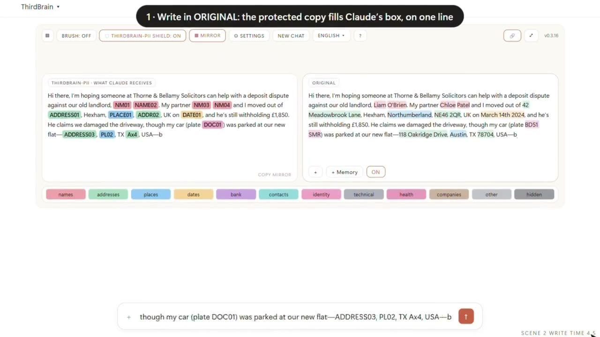

Use Claude on real work. Keep real names to yourself.
You write in the ThirdBrain-PII panel, inside the chat. Names, addresses, contacts, ID numbers and health data are replaced with placeholders in your browser. Claude works on the protected copy; its answer comes back with your real data, only for you.
Works in claude.ai as a custom connector. Version 0.3.16. Not yet listed in the Claude directory.

Product video, 3:29, with voice. It loads only when you press play (6.8 MB).
Three steps, all in the chat
Write in the panel
Ask Claude to open ThirdBrain-PII and write or paste in the ORIGINAL card. While you type, personal data is recognised in your browser and coloured by kind.
Check the mirror, then send
The mirror shows exactly what Claude will receive: every covered value replaced by a placeholder. Missed something? Turn the Brush on and tap the word.
Read the real answer
Claude answers with placeholders only. The panel reopens under the answer and shows it with your real data put back, in your browser.
The connector server only hands over the panel page. The text you write is protected inside that page; no message of yours and no answer with real data reaches the server.
What the panel does
Screenshots of the real panel (version 0.3.16) taken by the automated browser tests. Some are in Italian or Spanish: the panel speaks eight languages.
Swipe to see more
Original and mirror, side by side
On the right, what you write. On the left, what Claude receives. Each kind of data has its colour: names, addresses, places, dates, bank, contacts, identity, technical, health, companies, other, hidden. A tap on a colour in the legend switches that kind off.
The answer comes back with your data
After Claude answers, the panel opens again under the answer with the real values put back, and with empty cards ready for the next message. Previous panels fold into one line and reopen with a tap.
Built-in help on every button
Press “?” and tap any button: the panel explains where it is, what it does, when it helps, what happens after, and what it does not do, without pressing it. Guided paths walk through common tasks.
Memory and wiki, protected
Add documents to a knowledge base kept in your browser. Each document is reviewed before it enters. The wiki gives one page per person, organisation, place and topic; sentences Claude writes are checked against the sources and the ones that do not hold are marked.
Every function, by area
Names as they appear in the English panel and in the code (aegis2/panel/manual.ts, aegis2/web/server.mjs). Only functions shown on the web version are listed.
Swipe to see more
Connector tools (what Claude can call)
thirdbrain_open | Shows the panel in the chat. No input. Read-only, not destructive, closed world. |
thirdbrain_continue | Shows the panel again after an answer, with that answer at the top. Its only input is Claude's answer, which holds placeholders only (max 20,000 characters); it is not kept, logged or returned. |
thirdbrain_help | Returns the user guide of the panel as fixed text, the same for everyone. No input. |
Writing and protection
| Original | The card where you write or paste. Personal data is recognised in the browser and coloured by kind. |
| Mirror (“what Claude receives”) | Exactly the text Claude will get, every covered value replaced by a consistent placeholder. |
| Copy mirror | Copies the protected copy to the clipboard. |
| Brush | With the Brush on, a tap on a word covers it wherever it appears; a tap on a covered word opens its menu. |
| Remove from list · Change type | Leaves a covered value in clear, or changes its kind. |
| Add (selection) | Covers a selected piece of text as one value, with the chosen kind, including a custom name. |
| Legend | Twelve kinds of data, each with its colour; a tap switches a kind off. “All” switches every kind. |
| Ambiguous · Accept | Words that may or may not be personal data (a name that is also a word) stay covered until you decide, with a tick box each. |
| Did you mean …? | Offers to treat a value as one already known, so it gets the same placeholder. |
| ThirdBrain-PII Shield | ON: only the protected copy leaves. OFF: the panel stops protecting. |
| New chat | Empties the card and removes attachments. |
| Dictate | Writes what you say into the Original card; speech is recognised on the computer. |
Reading and checking
| Data list (AUTO · ADDED · REMOVED · DOUBTS) | Every value of the message, grouped by who decided it. “O” shows originals, “S” the placeholders Claude reads. |
| All items | Every value protected in the session, also of messages already sent, with its placeholder. |
| Highlights · Mirror · Locked scroll | Show or hide colours, show or hide the mirror card, scroll both cards together. |
| Semi-transparent covers | Lets you read the placeholders under the covers in the mirror. |
Answers and files
| Answer on top | When Claude reopens the panel, its answer appears at the top with the real data, in the browser. |
| Paste an answer by hand | Paste any answer with placeholders to see it with the original values. |
| Put the real data back into a file | Takes a file Claude made with placeholders (Word, Excel, PowerPoint, PDF, text) and saves a copy with the real data. |
| Read aloud | Reads the restored answer aloud with the computer's voice. |
| Citations check | Counts how many [F…] citations are backed by the cited passage: verified, uncertain, or general. |
| 👍 · 👎 · Copy | Mark an answer as helpful or not; copy it. |
Documents, memory and wiki
| + (this chat only) | Puts a document in this chat only: text, Word, Excel, PowerPoint, PDF with text, RTF, ePub. Read in the browser; Claude gets the protected copy. |
| + Memory | Adds documents to the knowledge, several at once: text, Markdown, CSV, JSON, HTML, Word, OpenDocument, Excel, PowerPoint, PDF. |
| Review · Confirm and add to the knowledge | A document enters the knowledge only after you review it; or choose “protect documents automatically”. |
| Attach to this message | Shows the protected passages that will go with your question, each with its [F…] tag, before sending. |
| Knowledge | Documents with summaries, links between documents about the same people, the tree of summaries. |
| Wiki (Index · Log · Rules · Clean-up · Export) | One page per person, organisation, place and topic; log of what entered and left; export to Markdown, with placeholders or with real values kept in the panel. |
| Delete · Forget all the knowledge | Removes one document, or everything after a confirmation. |
Panel
| ? (help) | Tap any button to read its explanation instead of pressing it; guided paths. |
| About · Try the sample document | The presentation (welcome, how to use, measures, system card) and an invented document full of fake data. |
| Language | Italian, Spanish, English, Catalan, German, French, Portuguese, Dutch. |
| Theme | Light or dark, following the chat. |
| Full screen ⤢ / ⤡ | Puts the panel over the whole chat and back. |
| Keys | Ctrl+Enter (Cmd+Enter) sends; Esc closes the open menu, then the open screen. |
See it at work
A replay of what the real engine (panel 0.3.16) did with three example messages. EXAMPLE All data is invented. This page does not run the engine and sends nothing anywhere.
A value is replaced in the mirror only when it is whole: half a name is shown grey until you finish typing it.
Measured, with the proof named
A value marked MEASURED has a test behind it, named below. A value marked ESTIMATE has not been measured. Numbers, not promises.
Personal data covered, by language MEASURED
Grey: engine before the last round of rules. Orange: engine now. Without recognition models, as the web panel runs.
Basis: pack G5, 14 whole documents per language written by helpers who never saw the engine, plus 25 ordinary sentences per language (tests/fixtures/docs/g5, scripts/lang-measure.mjs). Before = engine commit 4d69e5f, now = f691e8d. Measured 19 November 2026.
Basis: aegis2/web/bench/run.mjs in real Chromium, server and panel 0.3.16. Run on 24 November 2026: 50 passed, 0 failed, 102 s including the build.
Basis: tests/no-leak.test.ts (4 tests: no real value in chat, context, tools, network, logs), tests/web-formats.test.ts, tests/web-restore-file.test.ts. Run on 24 November 2026 in 3.3 s.
Basis: browser test W6, 24 November 2026, on the developer's Windows 11 PC. Your time depends on your computer.
Basis: the 25 ordinary sentences per language of pack G5, 8 languages, 19 November 2026.
Technical characteristics VERIFIED IN CODE
| Where text is processed | In the user's browser, inside the panel page. The panel declares no outside address (empty connect and resource domains), so the host blocks every outside call. Test NL1 checks that no real value appears in the chat, the model context, server requests or the console. |
|---|---|
| Server | Remote MCP server over Streamable HTTP, stateless; answers only at /mcp with POST; requests larger than 1 MB are refused. It keeps nothing. |
| Kinds of data | 12: names, addresses, places, dates, bank, contacts, identity, technical, health, companies, other, hidden. |
| Interface languages | 8: Italian, Spanish, English, Catalan, German, French, Portuguese, Dutch. |
| File formats (this chat) | Text, Word, Excel, PowerPoint, PDF with text, RTF, ePub. |
| File formats (memory) | Text, Markdown, CSV, JSON, HTML, Word, OpenDocument, Excel, PowerPoint, PDF with text. |
| Restore into a file | Word, Excel, PowerPoint, PDF, text. |
| Message size | Protected passages attached to a question: within 8,000 characters (tests W3, WK1). Answer passed back to the panel: up to 20,000 characters. |
| Requirements | A Claude account that can add a custom connector on claude.ai, a modern browser, and the choice “Allow always” when Claude asks to use ThirdBrain-PII. |
| Panel size | 5,754 kB, one page, everything inside (engine, PDF reader, lists). |
The real panel
Screenshots from the automated browser tests of version 0.3.16. All data shown is invented.
Swipe to see more
What it does not do
- It does not find every personal value. Coverage is 83–98% depending on the language on our test pack. Always check the mirror before sending; the Brush is there for what is missed.
- Text typed directly into Claude's own message box is not protected. Only what you write in the panel is.
- On claude.ai the protected text reaches Claude as context of the conversation; you then send a short message in Claude's box (the panel says “write ok and send”). The panel cannot type into Claude's box without the host showing a warning.
- Choose “Allow always” when Claude asks to use ThirdBrain-PII. With “Allow once” the panel may not reopen after the answer.
- Known misses in our examples: some company and clinic names, genetic variants (BRCA2), access tokens and API keys written without a label, towns written in lower case with no other sign, numbers spelled out in words.
- After a new version, the connector has to be removed and added again on claude.ai to see it.
- It is not listed in the Claude directory yet, and it has not been verified in the Claude Desktop app.
- The knowledge and the mapping between real values and placeholders live in your browser storage: clearing the browser data deletes them, and they do not follow you to another device.
Questions
Does Claude ever see my real data?
Not for what you write in the panel with the Shield on: Claude receives the mirror, with placeholders. What the engine misses and you do not cover with the Brush does reach Claude, so check the mirror.
Does your server see my text?
No. The server only hands over the panel page. Recognition and replacement happen in your browser. The one input the server accepts is Claude's own answer, which already holds placeholders only, and it is not kept.
Where are my real values kept?
In the storage of your browser, on this device. Nothing is sent to the developer.
Which languages does it work in?
The interface is in eight languages: Italian, Spanish, English, Catalan, German, French, Portuguese, Dutch. Coverage for each is in the Measures section.
Can I use it with files?
Yes: the “+” puts a document in the current chat only, and “+ Memory” adds documents to the knowledge after your review. Files Claude makes with placeholders can be turned back into files with the real data.
Does it work in Claude Code?
No. Claude Code is outside the scope of this version; the panel says so and points to claude.ai.
How much does it cost?
No price has been set. Access is by request.
Bring Claude to your real work
Write to ask for the connector address and the setup steps.